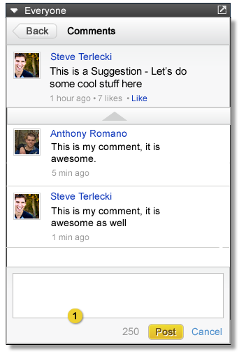

Home > Product Specification > Start Page Apps > Activity Stream App
Activity Stream App
Suggestions App
Overview
The Activity Stream app allows a user to view and interact with a single stream.
Conditions of Satisfaction
- The activity app must display all activities in a given stream
- The activity app must allow sorting by recent, popular and active posts
- The activity app must allow a user to view the comments of an activity
- The activity app must allow a user to comment to an activity
- The activity app must allow a user to like an activity, and unlike activities already liked
- The activity app must allow a user to view all who liked an activity
- The activity app must allow a user to post to a stream if and only if it is a group stream.
- The activity app must allow a user to search against the stream
User Experience
App View

- Search bar follows the Standard UX guidelines for search and searches against the stream
- Tabs allow user to sort by recent, popular and active. Sorts should behave the same way they do in the stream
- Page up button should be disabled if the user is already at the top of the list and should allow them to scroll up when clicked and held.
- Page down button should be disabled if the user is already at the bottom of the list and should allow them to scroll down when clicked and held
Unshown in this image: If this is a group stream show a “Post to this Group” box identical to the post comment box seen below that allows the user to post to the group

- When an activity is clicked, a detail pane is open with the activity at the top, Clicking the like button allows the user to like the activity.
- Below the activity should be all the comments, these should be in a scrollable list like the activities.
- At the very bottom should a post comment box

- When the “Post a comment” box is clicked an input box appears and allows the user to type a comment up to 250 characters in length. If over this limit, or if no characters have been entered yet, the post box is disabled.

- Clicking on “3 Likes” takes you to a like detail page showing a scrollable list of the people who liked the activity.
Test Plans
- Verify a Knowledge Worker can display all activities in a given stream
- Verify once the app is created it displays all the activities that are available from the source stream
- Verify a Knowledge Worker can sort by recent, popular, and active posts
- Verify the Knowledge Worker can sort the activities in the app by recents
- Verify the activities are being displayed with the most recent activities first
- Verify the Knowledge Worker can sort the activities in the app by most popular
- Verify the activities are being displayed with the activities with the highest like counts first
- Verify the Knowledge Worker can sort the activities in the app by most active
- Verify the activities are being displayed with the activities with the highest comment and like counts first
- Verify a Knowledge Worker can view the comments of an activity
- Verify the activity within the app notes the number of comments on the activity
- Verify clicking on the activity changes the view to display the comments on the activity
- Verify the Knowledge Worker can navigate back to the activity list from the comments view
- Verify a Knowledge Worker can comment on an activity
- Verify the activity within the app notes the number of comments on the activity
- Verify clicking on the activity changes the view to display the comments on the activity
- Verify there is a post field at the bottom of the app in the comment view
- Verify the post field section expands when the knowlege worker clicks in the text area
- Verify that the expand section includes a text button, that is inactive until text is entered
- Verify that the comment is limited to 250 characters and there is a visual indicator of the text limit
- Verify the Knowledge Worker can cancel out of the post section without posting a message
- Verify the Knowledge Worker can successful post to the stream with a message no longer than 250 characters and no less than 1 long
- Verify a Knowledge Worker can Like/Unlike an activity
- Verify the activity within the app notes the number of likes in the activity
- Verify clicking on the activity changes the view to show only that activity and all the comments to that activity
- Verify the Knowledge Worker has the ability to like the activity from a link within the comments view
- Verify the like count increments when the Knowledge Worker likes the activity
- Verify the Knowledge Worker has the ability to unlike an activity from a link within the comments view
- Verify the like count decrements when the Knowledge Worker unlikes the activity
- Verify a Knowledge Worker can view all who liked an activity
- Verify the activity within the app notes the number of likes in the activity
- Verify clicking on the activity changes the view to show only that activity and all the comments to that activity
- Verify that if the like count is greater than 0 it is hyperlinked in the comments view
- Verify that when the knowledge work clicks the like count in the comments view, the view changes to display the names of all the colleagues that liked the activity
- Verify that clicking on the names in the liked view takes the Knowledge Worker to the profile of the colleague
- Verify a Knowledge Worker can post to a group stream
- Verify there is a post field at the bottom of the app if the source stream is a group stream
- Verify the post field section expands when the knowlege worker clicks in the text area
- Verify that the expand section includes a text button, that is inactive until text is entered
- Verify that the comment is limited to 250 characters and there is a visual indicator of the text limit
- Verify the Knowledge Worker can cancel out of the post section without posting a message
- Verify the Knowledge Worker can successful post to the stream with a message no longer than 250 characters and no less than 1 long
- Verify the post field is not present if the source stream is not a group stream
- Verify a Knowledge Worker can search against the stream
- Verify there is a search field at the top of the app
- Verify that the search returns only those activities that contain the keywords entered by the Knowledge Worker within the activity or its comments
- Verify the search uses AND logic by default
| PAGE CONTENTS
Version 0.9
Documentation is also available for all of the following versions:
1.0 | 1.1 | 1.2 | 2.0
|